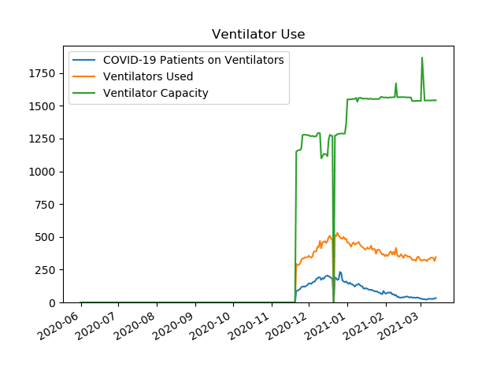
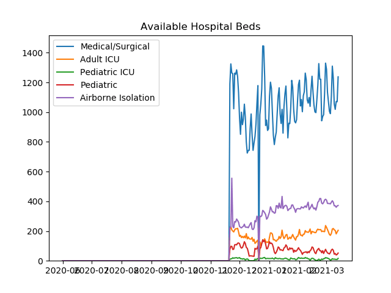
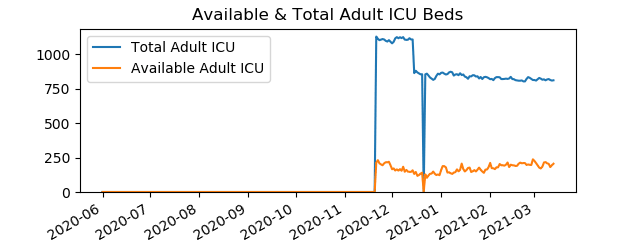
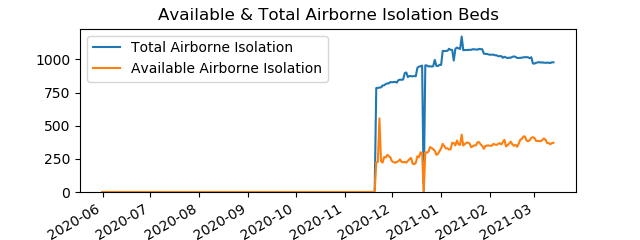
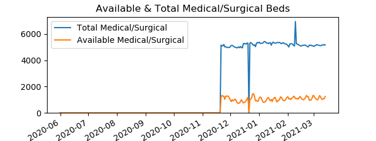
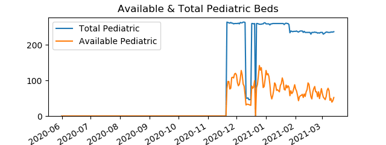
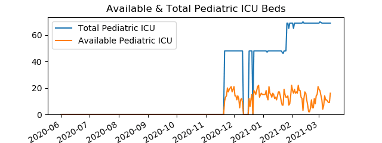

| Date | COVID-19 Patients Hospitalized | COVID-19 Patients on Ventilators | COVID-19 Adult Patients in ICU |
| 20201121 | 802 | 91 | 239 |
| 20201201 | 1170 | 145 | 274 |
| 20210101 | 1385 | 148 | 338 |
| 20210201 | 633 | 67 | 123 |
| 20210220 | 435 | 37 | 90 |

Data is from PA Dept Of Health
| |
|  |
|  |
|  |
|  |
|  |
|  |
|  |